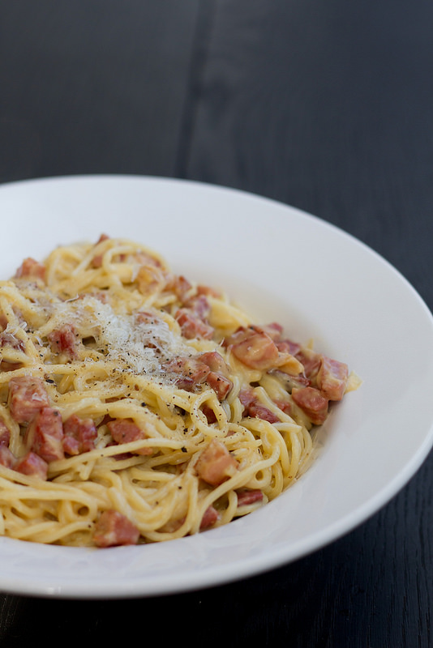

Keeda makaronid rohkes soolases vees al dente. Samal ajal lõika guanciale, pancetta või peekon väikesteks kuubikuteks või ribadeks. Prae mõõdukalt kuumal pannil väheses oliiviõlis kuldseks ja krõbedaks. Pane muna(kollase)d suurde toasooja kaussi, milles plaanid pastarooga serveerida. Klopi munad vispliga lahti. Sega juurde riivitud juust, maitsesta julgelt musta pipraga. Nüüd vispelda juurde üks korralik kulbitäis kuuma pastakeeduvedelikku!* Siis kurna spagetid ja lisa kohe muna-juustusegu hulka. Sega kiiresti läbi, sega juurde (vajadusel nõrutatud) lihakuubikud. Puista peale veel riivitud juustu ja musta pipart ning serveeri kohe.
